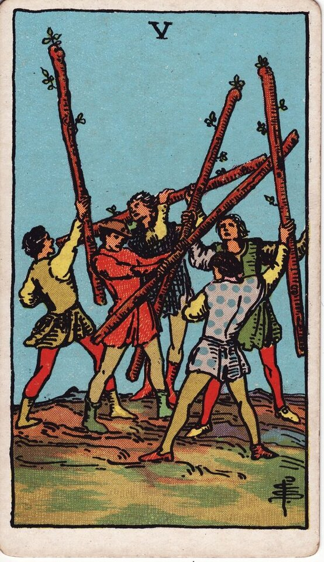

Minor Arcana · Suit of Wands
Five of Wands Tarot Card Meaning
The Five of Wands is the scrum - clashing energy, competition, and noisy friction. Want to know what it means in your spread? Every reader on our line is hand-vetted - connect in under 60 seconds, $1 for your first minute, hang up anytime.
- Hand-vetted readers
- Available 24/7
- Hang up anytime

Five of Wands - What It Shows
Five young people brandish wands in what looks like a chaotic scuffle - but nobody is actually being hurt. It reads more like a sparring match or a disorganized free-for-all than a battle. After the stability of the Four, the Five is disruption: competing energies, clashing ideas, and the friction that comes when several people all want to lead at once.
Five of Wands Upright Meaning
Upright, the Five of Wands is conflict and competition - usually messy, unfocused, and exhausting rather than dangerous. Think arguments where everyone talks over each other, rivalry, or a group that can't align. At its best it's productive tension that sharpens ideas; at its worst it's pointless squabbling that drains everyone.
Five of Wands Reversed Meaning
Reversed, the conflict is resolving, being avoided, or going internal. It can mean stepping out of a pointless fight, finding common ground, or - less ideally - tension that's been suppressed instead of aired and will resurface.
Five of Wands in Love & Relationships
In love, the Five of Wands is friction: bickering, mixed signals, competing for someone's attention, or a love triangle's low-grade chaos. It's usually heat and ego rather than a relationship-ending threat. Example: a caller convinced her partner was pulling away drew the Five of Wands; the read reframed it as repetitive, unproductive arguing - a communication problem to defuse, not a betrayal.
Five of Wands in Career & Money
For work it's a competitive or contentious environment - office politics, a crowded field, clashing teammates, or a job hunt with many applicants. Example: someone interviewing against a big pool pulled this card; the message was that it's a competitive scrum and they need to differentiate and stay above the noise rather than out-shout it.
Five of Wands as Advice
As advice: pick your battles. Decide whether this conflict is worth your energy, bring order to the chaos, and don't get dragged into a fight that has no prize.
What People Ask About the Five of Wands
Common questions readers hear about this card:
"Does it mean a love triangle?"
It can - competing for attention or rivalry - but more often it's general friction.
"Is the conflict serious?"
Usually not - it's noisy and ego-driven more than threatening.
"Five of Wands as feelings?"
Often mixed, conflicted, or 'I don't know what I want' energy.
"Why do I keep getting it?"
A sign of a recurring, unresolved clash you keep re-entering.
Five of Wands - Yes or No?
Leans no, or "not without a fight" - expect competition and friction before anything settles. Reversed can soften toward "yes, once the conflict clears."
Five of Wands Reversed in Love & Career
Reversed, the Five of Wands usually means the conflict is changing state rather than vanishing. In love, the best version is bickering settling down, finding common ground, or choosing to stop competing for attention; the harder version is tension that's been suppressed instead of aired and is quietly building. Avoiding the fight isn't the same as resolving it. In career, reversed it can be office politics cooling, stepping out of a pointless rivalry, or a competitive process ending - or it can be conflict avoidance that lets a real problem fester. The key question reversed is whether the peace is genuine or just postponed. A live reader can read which way it's actually going for you.
Five of Wands Timing in a Reading
Timing is the least precise thing tarot does, so read this as a lean, not a date. Five of Wands friction tends to be short-lived - days to a few weeks of noisy competition rather than a long siege. It often marks an active, ongoing scrum that resolves once someone brings order or steps out. Reversed, the conflict either ends sooner or goes underground and simmers. A live reader will read the duration from the surrounding cards and your situation, which beats a card-only guess.
Five of Wands Card Combinations
Context changes everything - a few pairings readers see often:
Five of Wands + Seven of Wands
A real conflict you'll need to stand firm and defend in.
Five of Wands + Justice
A contested dispute, disagreement, or legal/formal clash.
Five of Wands + Two of Cups
Competition or tension resolving into connection and cooperation.
Five of Wands in a Tarot Reading
A meanings page is the map; a live reading is the territory. The Five of Wands shifts with its position and the cards around it - which is what a hand-vetted reader interprets for your question. See the full Suit of Wands, all 56 cards on the Minor Arcana hub, or start a phone tarot reading.
← Four of Wands · Next: Six of Wands →
What Does the Five of Wands Mean for You?
A meanings list is the map; a live reading is the territory. We'll connect you with the right hand-vetted tarot reader in under 60 seconds. $1/min first call · 15 minutes for $10 · hang up anytime · 100% satisfaction promise.
Call (888) 920-6662 NowFive of Wands - Frequently Asked Questions
What does the Five of Wands mean?
Conflict, competition, and clashing energy - often messy and unfocused.
What does it mean reversed?
Conflict ending or avoided, inner tension, or disagreements going underground.
What does the Five of Wands mean in love?
Friction - petty arguments, competing for attention, or mixed signals.
Is it a yes or no card?
Leans no, or "not without a fight" before resolution.
How much does a reading cost?
First-time callers pay $1/min, or 15 minutes for $10, and you can hang up anytime.
Get Your Tarot Reading Now
Connected to a hand-vetted reader in under 60 seconds, the cards pulled on your real question, and you hang up with clarity.
Call (888) 920-6662